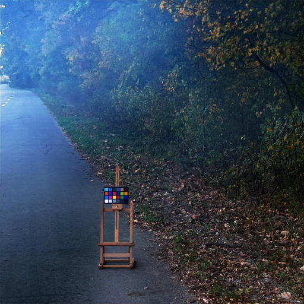

恢复对比与细节
雾霾降低图像的对比度与色彩保真度，也会影响视觉算法的输入质量。目标是从一张有雾图像，重建更清晰的结果。
Image experiment / 图像实验
SE-CGAN / 单幅图像去雾
一次从模型训练走向在线服务的毕业设计。先拖动滑杆看处理前后，再打开独立演示页，试试你自己的图片。


评测数字来自既有训练实验记录；在线演示会等比缩放输入，展示规格与离线评测口径分开说明。
Open the demo / 完整体验
在线演示在独立的去雾服务中打开，可拖拽上传、选择示例、滑动对比、查看耗时并下载结果。
在线演示暂未开放，可以先查看上方的预生成对比样例。
雾霾降低图像的对比度与色彩保真度，也会影响视觉算法的输入质量。目标是从一张有雾图像，重建更清晰的结果。
条件生成对抗网络 SE-CGAN：Tiramisu 密集连接 U-Net 生成器重建图像，70×70 PatchGAN 判别器约束局部纹理。
使用 RESIDE 合成雾图与 O-HAZE 真实雾图训练、评测，记录 SOTS 测试集的 PSNR 与 SSIM，并校验导出权重与训练工程的一致性。
训练采用 L1 重建损失、VGG 感知损失与对抗损失的加权组合。生成器负责重建无雾图像，判别器提供局部纹理约束。服务化后通过 FastAPI 接收 multipart 图片并返回 PNG，输入尺寸与上传体积受服务规格限制。
最初是 PyQt6 Windows 桌面演示，后来把权重、推理与展示拆开，部署为可以通过链接访问的服务。
PyQt6 加载模型权重，本地查看去雾结果。
导出权重、一致性校验与 FastAPI 接口。
Docker 固定依赖与启动环境，便于迁移。
CloudBase 云托管承载演示页与推理。
上方对比展示这一张图片的模型输出；离线指标描述所用测试集上的表现，不代表每张真实场景图片都会得到同样的改善。可以在独立演示页换图比较，也可以继续查看工程化案例 ↗。